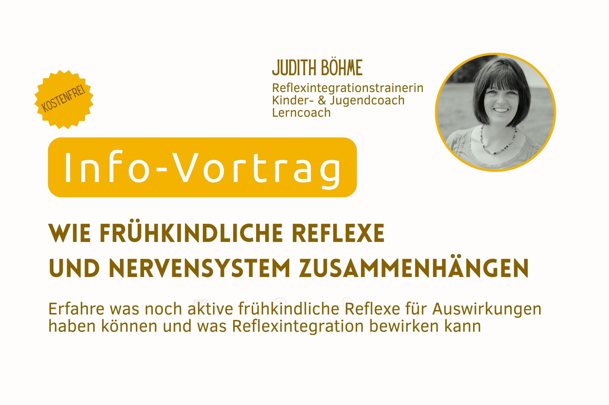

RIT-Infovortrag:
Wie frühkindliche Reflexe und Nervensystem zusammenhängen
Donnerstag, 19.11.2026 um 19:00 Uhr
Kommt dir etwas davon bekannt vor?
- verkrampfte Stifthaltung, mühsames (Ab-)Schreiben
- ständiges Stuhlkippeln, generell motorisch unruhig
- krummer Rücken beim Sitzen, Sitzhaltung mehr Liegen als Sitzen
- leicht ablenkbar – Konzentration auf das Wesentliche fällt schwer
- Verwechslungen wie 72 statt 27
In meinem kostenfreien Vortrag erfährst du:
- Was frühkindliche Reflexe sind
- Was sie mit dem Nervensystem zu tun haben
- Was es bedeutet, wenn frühkindliche Reflexe noch aktiv sind
- Wie sich betroffene Kinder fühlen
- Wie ein Reflexintegrationstraining abläuft & was es bewirken kann
Anmeldung
Melde dich bitte für den Infovortrag mit einer Email an hallo@judithboehme.de an. Alle weiteren Informationen sende ich dir dann per Email zu.